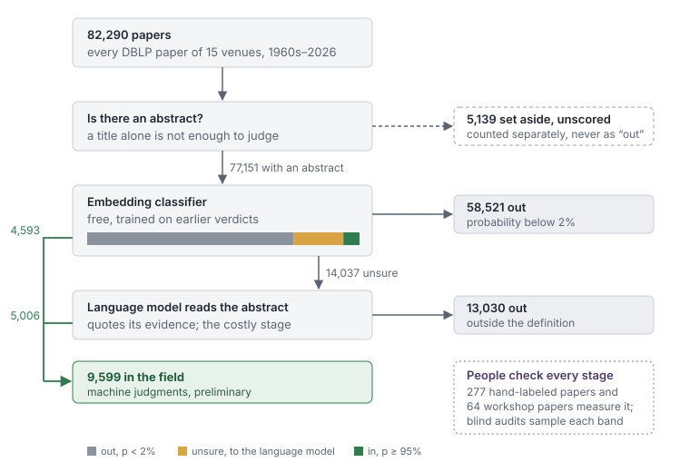

How we decide what counts as computational social choice
The ChoCo atlas starts from a simple-sounding question: which papers belong to computational social choice? Everything downstream (which problems we try to continuize, which results we try to transfer) depends on that list, so we want the list to be large, honest about its errors, and cheap to fix when someone tells us we got a paper wrong.
This post describes how we decide membership and what that produced. It also covers two blind audits that found a real weakness, how we changed the definition in response, and how we chose the model that now reads the undecided papers. The current count is 23,884 papers, all labeled by machine and all preliminary.
The corpus
We start from every paper that DBLP lists for 15 venues where computational social choice is published: AAAI, IJCAI, ECAI, AAMAS, EC, WINE, SAGT, ADT, JAIR, Artificial Intelligence, Social Choice and Welfare, Games and Economic Behavior, Journal of Economic Theory, Mathematical Social Sciences, and ACM TEAC. AAMAS 2026 is not in DBLP's bulk data yet, so its 656 papers come from Crossref. That is 82,290 papers from the 1960s to 2026, most of which are not social choice.
A venue list misses the field's papers published elsewhere, for instance at theory conferences such as STACS, ESA or SODA, or in journals such as Mathematical Programming. So we also follow citations. The venue papers judged to be in the field are the seeds. A paper outside the venues becomes a candidate if it cites, or is cited by, at least two seeds. Citation links come from Semantic Scholar, in both directions and for all years.
- The first round found 27,076 candidates that were not already venue papers.
- A second round, seeded with the first round's members as well (15,016 seeds), found 61,888 more. From that round we take only the papers the classifier is confident about (see below), because an audit found those reliable.
The COMSOC workshop is not indexed by DBLP. We use its papers as a check rather than as part of the corpus (see below).
The cascade

Membership is decided in stages. Each stage is more expensive than the one before it and only sees what the earlier stages could not settle.
- Is there an abstract? A title alone is not enough. On our labeled data, the same judge finds 96.6% of the field's papers from an abstract but only 78.3% from a title. So a paper without an abstract is not rejected. It is set aside as unscored and counted separately.
- An embedding classifier. Each abstract is turned into a vector by an open embedding model (qwen3-embedding-4b), and a logistic regression trained on earlier verdicts gives a probability of membership. Below 2% the paper is out, at 95% or above it is in, and nothing else is spent on it.
- A language model reads the abstract. Papers in between, the gray zone, go to a language model with a written definition of the field and a list of boundary rulings. It must answer comsoc, partly, no or unclear, and quote the words in the abstract that support its answer, so a wrong verdict can be traced to what the model read.
- People check every stage. A set of papers labeled by hand measures each stage, and blind audits sample each band to check that the confident ends really are confident.
What it produced
The venues. Of 82,290 papers, 77,151 have an abstract we could obtain, from open metadata, publishers' landing pages and, for four journals, a publisher's text-mining interface. The classifier put 58,521 of them out and 4,593 in, and the language model read the remaining 14,037 and kept 5,006. That makes 9,599 venue papers in the field. Some papers appear twice under the same DOI or title, and merging those leaves 9,319.
The citation snowball. Of the first round's 27,076 candidates, 19,427 have an abstract, and 12,842 of them are in. From the second round we take the 1,878 papers the classifier accepted outright. After removing papers that were already counted, the snowball adds 14,565 papers.
Together that is 23,884 papers.
The ranking of venues came out the way a person in the field would draw it, although nothing in the pipeline was told which venues matter. Among venue papers with an abstract, 74.9% of Social Choice and Welfare is in, 70.0% of ADT, 56.0% of Mathematical Social Sciences, 36.2% of EC, 33.6% of Games and Economic Behavior, 15.9% of AAMAS and 3.6% of AAAI.
By decade, the whole corpus has 20 papers before 1960, 46 in the 1960s, 222 in the 1970s, 445 in the 1980s and 648 in the 1990s, then 4,143 in the 2000s, 9,708 in the 2010s and 8,642 so far in the 2020s. The oldest is from 1881. The early papers are social choice theory, found mostly by the snowball and in the economics journals. Our definition admits that work whether or not it is computational, because it is the literature our continuous questions draw on.
As a check on recall, we took the COMSOC workshop papers that later appeared in one of our venues under the same title. Of those with an abstract, 236 of 241 are in.
Two blind audits
A hand-labeled set measures the language model on papers we chose. To see how the whole pipeline behaves on papers we did not choose, we gave samples of the snowball to a frontier model (GPT-6-Pro) with our written definition but without our verdicts, and asked it to label every paper and to criticize the definition. The first audit had 80 papers, the second 300. The samples were stratified by the pipeline's hidden verdict, so we could read the results band by band.
Precision held. In the first audit, of the 65 papers the pipeline kept, the auditor judged 58 in, 5 borderline and 2 out. In the second, 117 of the 120 second-round papers the classifier accepted outright were in, which is why we take exactly those from the second round.
Recall did not. Of 100 gray-zone papers that the language model (then Qwen 3.8 27B) had rejected, the auditor judged 63 in and 18 borderline. The first audit had pointed the same way on a smaller sample (5 of 15 in). Many of the misses were topics our definition lists as members, such as opinion dynamics. The cause was in the definition itself. Its core test asked for an outcome binding on the group, its list of members included opinion dynamics, and a smaller model followed the core test.
The auditor also proposed boundary rulings, seven per audit, five of them the same both times. Martin decided each one, and added rulings of his own where the audits exposed a question the definition did not answer. The current definition (v6) says, among other things:
- Opinion dynamics, social influence, influence maximization, social learning and diffusion are members. The outcome is the state of opinions a population reaches, and no final decision is needed.
- A mechanism studied only for a seller's revenue, a buyer's payoff or a principal's profit is not a member. Allocative efficiency, fair division and coalitional stability are.
- Automated negotiation (strategies, opponent modeling) is not a member. Bargaining solutions are.
- Eliciting one agent's forecasts is not a member, and neither is the emergence of conventions. Combining several agents' information into a common estimate is.
- Using a game value only to attribute importance to features or nodes is not a member, unless the paper also contributes to cooperative games.
Reading the audits also made Martin revisit his own labels. He changed 11 of his 277 hand labels from out to in and confirmed the rest. The numbers below use the corrected labels.
Choosing the model that reads the gray zone
The language-model stage is the one that costs money and quota, so we compared the models we could run on it. Each read the same 361 abstracts with the same prompt. 277 of them carry Martin's hand labels, and the other 64 are papers from the COMSOC workshop, which should all be kept.
The hand-labeled set is deliberately hard. 180 of the 277 papers were chosen because earlier judges disagreed about them, and only 97 were drawn at random from the classifier's confident bands. Accuracy on this set is lower than it would be on a random sample of the corpus.
The first comparison, before the audits, used the previous definition (v4) and the original labels:
| model | where it runs | accuracy | recall | precision | workshop papers kept |
|---|---|---|---|---|---|
| Claude Sonnet 5 (medium) | Anthropic | 90.3% | 90.2% | 88.0% | 60 of 64 |
| Qwen 3.8 27B | e-INFRA CZ, open weights | 87.0% | 91.8% | 81.2% | 60 of 64 |
| Kimi K3 | e-INFRA CZ, open weights | 84.8% | 91.8% | 77.8% | 62 of 64 |
| GLM-5.3 | e-INFRA CZ, open weights | 84.8% | 91.0% | 78.2% | 62 of 64 |
| Qwen 3.8 Flash | e-INFRA CZ, open weights | 83.0% | 93.4% | 74.5% | 61 of 63 |
| GPT-5.6 Terra (medium) | OpenAI | 82.7% | 92.6% | 74.3% | 62 of 64 |
| Jev 1.13 (p ≥ 0.5) | TypeSafe, via OpenRouter | 82.3% | 88.5% | 75.5% | 62 of 62 |
| GPT-5.6 Luna (high) | OpenAI | 81.9% | 93.4% | 73.1% | 59 of 64 |
Recall is the share of the field's papers a model keeps, and precision the share of kept papers that really belong. Measured on 2026-09-23.
Three things stood out. Recall was nearly flat, between 90% and 93% for every language model, and they differed mainly in how many outsiders they let in. The disagreement concentrated on about 25 boundary papers in a few topics (emergence of conventions, automated negotiation, distributed constraint optimization, multi-agent task allocation), exactly the topics the new rulings now decide. And Sonnet had a home advantage, since the prompt had been revised four times after reading Sonnet's mistakes on this same set.
Jev deserves a separate word, since it is not a language model. It returns only a probability, with no text. It ranks papers well (area under the ROC curve 0.928), and its confident answers are reliable. But it was confident about only a third of this set, it cannot quote its evidence, and our own classifier already does its job while learning from our labels. The whole run cost $0.016.
After the audits, we compared the two open-weight candidates under the old and new definitions, on the corrected labels:
| model | definition | accuracy | recall | precision | workshop papers kept |
|---|---|---|---|---|---|
| Claude Sonnet 5 (medium) | v4 | 89.2% | 85.7% | 91.2% | 60 of 64 |
| Qwen 3.8 27B | v4 | 85.6% | 83.5% | 86.0% | 61 of 64 |
| GLM-5.3 | v4 | 85.9% | 90.2% | 82.2% | 60 of 64 |
| Qwen 3.8 27B | v6 | 89.5% | 86.5% | 91.3% | 62 of 64 |
| GLM-5.3 | v6 | 88.4% | 91.0% | 85.8% | 60 of 64 |
Qwen with the new definition is the most accurate, but the audits said recall was the weakness, and GLM-5.3 with the new definition has the best recall at a cost of nine more outsiders on this set. On the 380 audited snowball papers, it keeps 85.4% of those the auditor judged in. So GLM-5.3 now reads every gray zone, the venues' and the snowball's alike: 24,045 papers, re-read in about twelve hours on Czech national research infrastructure. One model on one infrastructure also removes an old inconsistency, since abstracts under a text-mining license may not go to a commercial AI service and previously had to be read by a different model than the rest.
What is not counted
Some papers are neither in nor out, and we report them rather than guess.
- No abstract. 5,139 venue papers and 7,223 first-round snowball papers have no abstract we could obtain. Of the snowball ones, 1,916 are linked to at least five seeds, so many of them are probably members.
- Classifier only. One publisher's terms let us process its abstracts only with a non-generative model, so for 3,552 snowball papers a classifier decides alone (one trained on the language model's earlier verdicts). The 1,134 it cannot settle are not counted.
- Pending. 426 snowball papers wait for the next weekly quota of a text-mining interface.
- Second-round gray zone. Of the second round's 35,154 papers with an abstract, we take only the 1,878 confident accepts. The other 33,276 are not read by a language model.
What this means for errors
The design choice we care most about is that a mistake is cheap to fix. When someone tells us "you missed this kind of paper", we change the definition or add a boundary ruling, check the change on the hand-labeled set, and re-run the language model on the gray zone only. That is what happened this month: the audits found a recall problem, the definition changed, and about 24,000 gray-zone papers were read again, out of 171,000 candidates. The confident bands did not change. Only if the classifier itself has buried a whole topic in its reject band do we retrain it, and even then only the papers that move into the gray zone are read again.
So if you know a paper or a topic we have missed, please tell us. The fix is local.